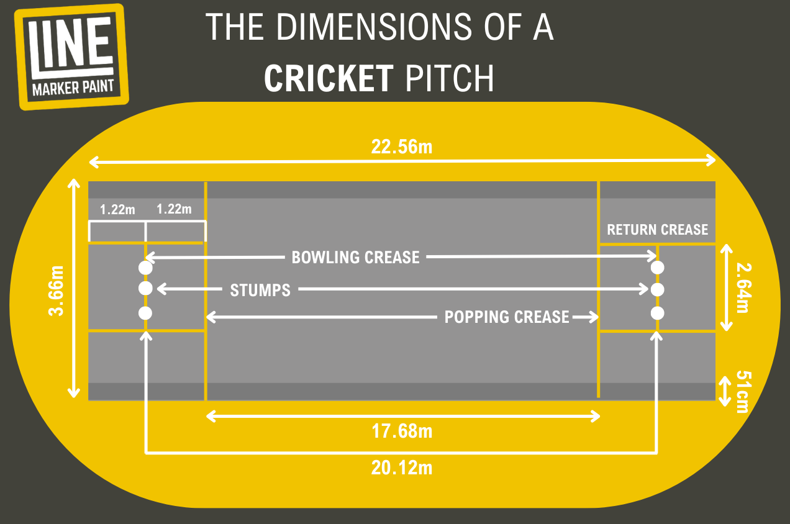
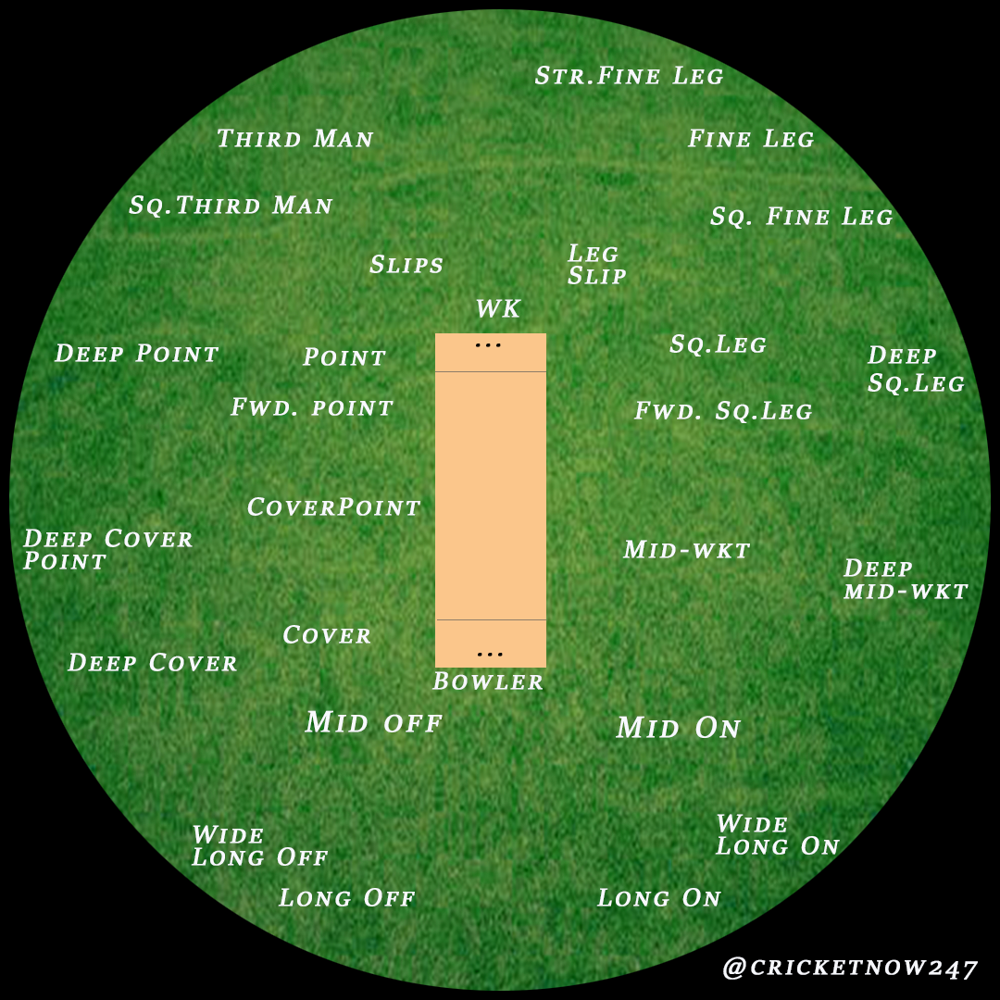
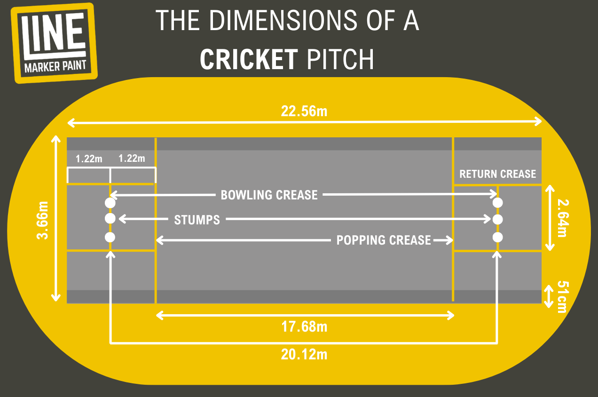
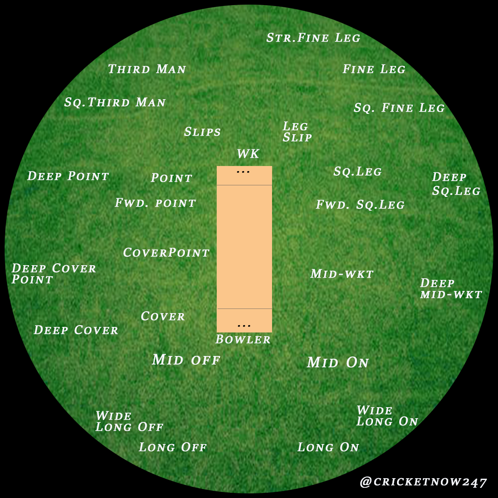

Cricket is a bat-and-ball game played between two teams of eleven players. It is one of the most popular sports in the world, especially in countries like England, Australia, India, Pakistan, South Africa, New Zealand, Sri Lanka, and the West Indies. The game is played on a circular or oval field with a 22-yard pitch in the center. One team bats and tries to score runs, while the other team bowls and fields to prevent runs and dismiss batters.
The aim of the batting team is to hit the ball and score runs by running between two sets of wooden stumps called wickets. The bowling team tries to get the batters out in various ways such as being bowled, caught, run out, or leg before wicket (LBW). Once ten batters are out or a set number of overs are completed, the teams switch roles. The team with the most runs at the end wins the match.
Cricket is played in three main formats: Test matches, One Day Internationals (ODIs), and Twenty20 Internationals (T20Is). Test matches are the longest format and can last up to five days. ODIs are limited to 50 overs per side and are completed in one day. T20 is the shortest format, with each team playing just 20 overs. All three formats require skill, strategy, teamwork, and patience.
Cricket has a rich history, with international competitions such as the ICC Cricket World Cup, ICC T20 World Cup, and the World Test Championship(WTC) series being watched by millions of fans worldwide. Modern cricket has evolved with advanced technology, colorful uniforms, and entertaining leagues like the IPL(India), Big Bash (Australia) and The Hundred (England).
In India, cricket is not just a sport—it is a national passion. The Indian Premier League (IPL) is one of the biggest T20 leagues globally, and legendary players like Sachin Tendulkar and Virat Kohli have made India a cricketing powerhouse admired around the world.
Australia
ICC ODI World Cup 2023
Australia
ICC ODI Women's World Cup 2022
India
ICC T20 World Cup 2024
South Africa
WTC 2025
Royal Challengers Bengaluru
IPL 2025